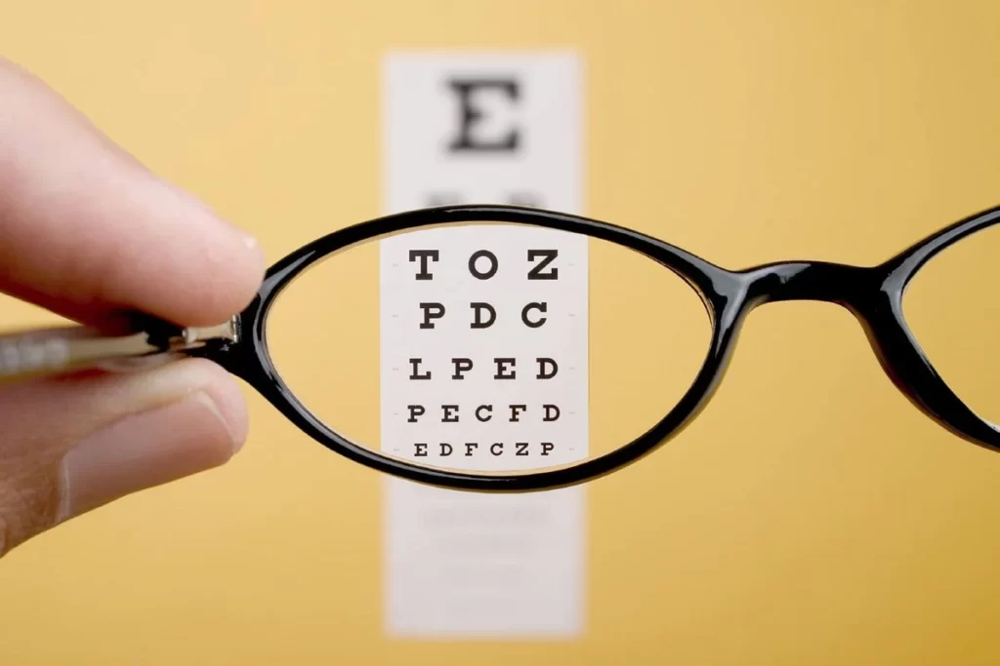

Low Vision
Low Vision Disability
Low vision is a condition where a person has significant visual impairment that cannot be fully corrected with glasses, contact lenses, medication, or surgery. It affects the ability to perform everyday tasks such as reading, writing, recognizing faces, or navigating the environment, even with traditional vision correction methods.
Key Points About Low Vision
Severity: Low vision is not total blindness, but vision is reduced enough to interfere with daily life.
Causes: Various eye conditions such as macular degeneration, glaucoma, cataracts, or diabetic retinopathy can lead to low vision.
Impact: It may affect central vision (used for detailed tasks like reading), peripheral vision (side vision), or both.
Tools for Assistance: Individuals with low vision often use specialized aids like magnifying lenses, screen readers, or high-contrast text, and may undergo mobility training to enhance independence.
Low vision can vary in severity, but for those affected, it often requires the use of accessible tools and support to maintain a higher quality of life and independence.